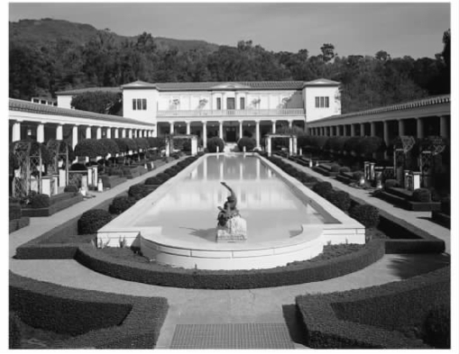
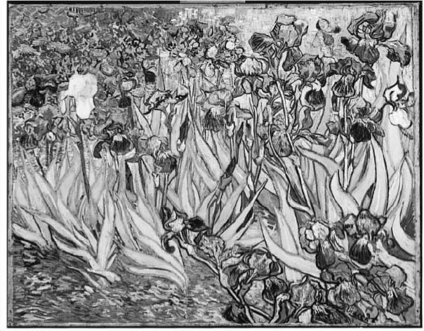
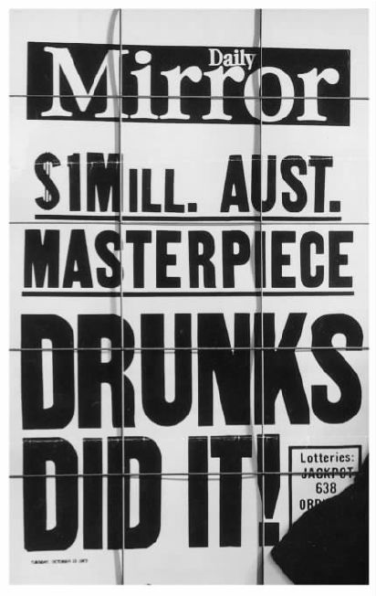
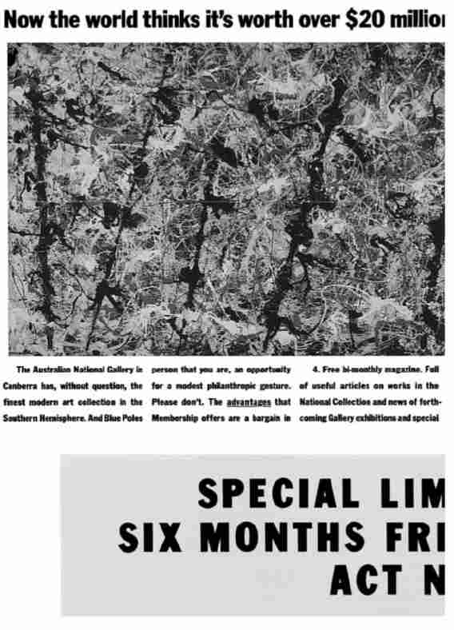
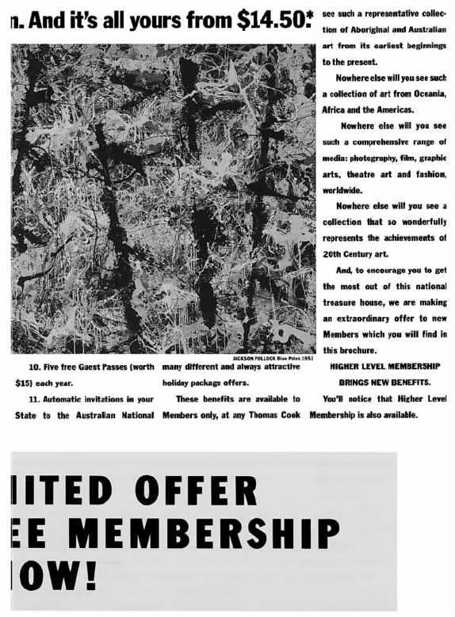
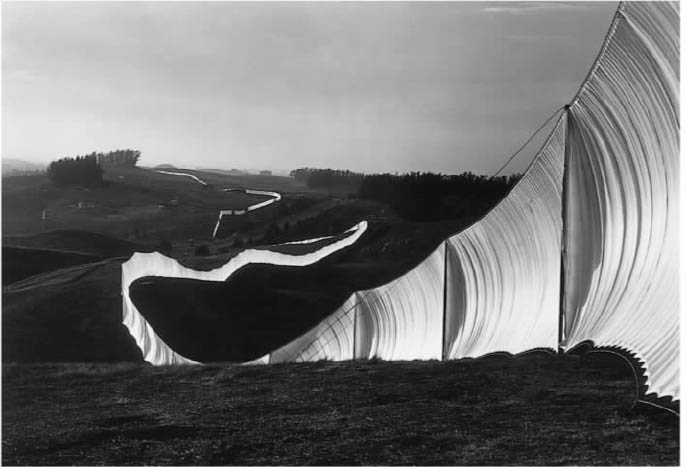
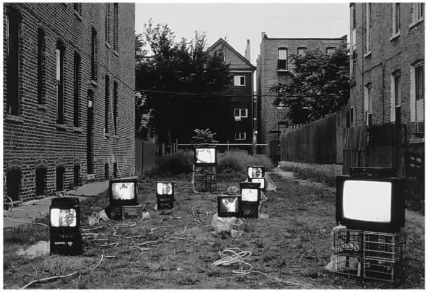

文化交流使人们产生了对待艺术的各种态度，从诚心尊重到视它为生财之道。艺术和金钱在博物馆等许多机构中互相影响。博物馆保存、收集艺术品并教育公众、传递艺术的价值和品质标准。但是这些是谁的标准？它们是怎样传递的？它们为什么会发展起来？对于变化着的艺术理论它们能告诉我们什么？本章将追踪艺术、教育、公民、商业以及精神价值之间的关系。
即使是一些小城市也常常设有几座博物馆。例如，圣菲市有一座美术博物馆、一座国际民间艺术博物馆、一座印第安艺术与文化博物馆，还有一座乔治亚·奥基夫博物馆。世界各地的新式博物馆通过展示少数族裔艺术家、妇女和普通民众的艺术（“民间艺术”包括手工艺品、玩具甚至火车模型）而有别于传统的博物馆。这些新建的博物馆常常将艺术和人类学、社会学相结合。印第安艺术和文化博物馆展示了那些“与当地的艺术策展人、读者、艺术家、作家和教育者合作”的作品，“这些人积极参与研究、学术、展览和教育活动”。
许多欧洲和亚洲的博物馆是从原来的皇家收藏发展而来的，例如巴黎的罗浮宫、马德里的普拉多美术馆、台湾地区的故宫博物院、京都的国家博物馆和圣彼得堡的艾尔米塔什博物馆。一些博物馆如奥林匹亚和特尔斐附近的希腊博物馆的收藏反映了本地重要的考古发现。一些新近创办的博物馆被安排在国家的首都如堪培拉、约翰内斯堡、华盛顿和渥太华，以此来树立和加强文化倡导者的形象。其他一些博物馆如里斯本的瓷片艺术博物馆是因为本地产品的生产环境而设立的。一些博物馆由于结合了地区的、艺术的、科学的和医药的历史而难以归类，如瑞典乌普萨拉的古斯塔维勒姆博物馆。
博物馆也许能反映一位艺术家的地域身份，乔治亚·奥基夫大部分的创作时光是在新墨西哥州度过的，她的作品主要描画印第安村落、沙漠中广阔的天空、花卉和发白的动物尸骨。此外，还有其他为单个艺术家而设立的博物馆，如莫奈在吉维尼的房子和花园、阿姆斯特丹的凡·高博物馆和匹兹堡的沃霍尔博物馆。有时一些博物馆的选址看起来具有很大的偶然性，圣菲的民间艺术博物馆因为亚历山大·吉拉德个人的财富、收藏热情和投入而得以壮大，科威特的塔里克·拉杰卜博物馆也是如此，它是建立在一位伊斯兰艺术家的私人收藏之上的。奥里曼·J.保罗·盖蒂将他的别墅博物馆安排在马里布，在那里他拥有自己的资产。
大部分早期的博物馆声称为公众服务，但是从新近成立的博物馆可以看出各自为政的倾向。像国家妇女艺术博物馆、非裔美国人艺术博物馆、犹太人博物馆、西班牙人博物馆等一些博物馆已经被人称为“部落”博物馆。看起来好像每一个社群都有（或者想要）他们自己的艺术博物馆。阿瑟·丹托曾经在他的文章《博物馆和饥渴的大众》中探讨过这种博物馆“诸侯割据”的现象。少数族裔争辩说，之所以需要这些新的博物馆是因为他们的 艺术家、品位和价值观没有在主流博物馆的展览中被呈现过。（这些人也许会指出哲学家大卫·休谟所说的“有教养的人”的“品位标准”只简单地反映了小范围人群的文化标准。）对此，老博物馆试图拓宽它们的收藏范围和展览的观众面。它们定期展示少数族裔的艺术，你在今天的开幕式上也许会发现非洲的鼓手和舞蹈者取代了原来开幕式上的弦乐四重奏。但是艺术博物馆看起来仍然是一个精英机构，在整个欧洲和北美洲的人口中，参观过艺术博物馆的人平均不超过22%，这个群体一直向着高收入和高教育程度的人群倾斜。
法国社会学家皮埃尔·布尔迪厄联系社会经济阶层和“教育资本”对品位进行过研究。他的目的是“通过在社会阶层结构中寻找分层体系的基础（这些分层体系……指定了审美享受的对象），给康德的判断力批判中所涉及的古老问题一个科学的回答”。就像他在著作《区隔：品位判断的文化批判》中所指出的那样，这种结果是复杂的，特别是从一个国家（法国）转到另外一个国家后，阶层评估的结果很难做出。但是布尔迪厄揭示了个体所属的阶层与其在艺术、音乐、电影和戏剧方面的喜好之间的清晰联系。例如，受低等阶层的人喜欢的古典作曲家就人数而言低于受经济水平高、专业程度高、教育程度高的人士喜欢的古典作曲家。在研究人们对先锋戏剧和独立“艺术”电影的喜好时，同样的模式重复出现。布尔迪厄总结道：“品位区别人群，同时也区别分类者。”
在美国，人们不愿意承认阶级存在且具有重大意义。但是阶级差别被人们认识并成为著名的好莱坞电影《风月俏佳人》的故事情节基础。这部电影（升级版的《卖花女》）描述了一位漂亮的妓女（由朱莉亚·罗伯茨扮演）遇见一位成功的商人（由理查德·基尔扮演）并和他结婚，从此使自己的阶级地位发生转变的故事。这位有钱且老于世故的男主角不仅教这位嚼着口香糖的粗俗妓女怎样穿着、说话、走路，甚至教她怎样欣赏生活中高雅的东西（如歌剧）。在电影中，欣赏歌剧一直是一种上等阶级身份的暗示，然而，对西部乡村音乐的喜欢则意味着它的反面——一个土包子或乡下人。
艺术家维塔利·科马和亚历山大·梅拉梅德也曾研究过艺术品位，他们当时得到了《国家》杂志的部分资助。这两位艺术家似乎有些不正经，他们创造了一项自称为“美国（或者中国或者肯尼亚）人最想要的绘画 ”的调查。他们的研究揭示了一种令人惊奇的普遍结果：大家都不喜欢抽象艺术和黄绿色，都喜欢蓝色和写实的风景画。美国人想要的绘画是一幅有山有水的风景画，画的主要颜色是蓝色（实际结果是44%的人想要），画中间要有一头野生动物和一个历史主题。这个结果似乎很荒唐：在一幅宁静的风景画中，我们看到乔治·华盛顿处于画面的视觉中心点上，他一脸茫然地站在一条宽阔的河边，野鹿在旁边闲逛！
很显然，按照指引来作画不能产生杰作，但是总有艺术家进入可能会被布尔迪厄称作“低”品位的创作领域而取得成功。克莱门特·格林伯格称这种“低”品位的艺术为庸俗艺术 （某些粗俗并符合大众口味的东西）。诺曼·罗克韦尔 [1] 的《星期六晚邮报》的封面也许是一个庸俗艺术的老范例，上面描绘着小镇的生活场景和快乐的家庭聚会。新近的类似人物还有托马斯·金卡德，一位自我定位为“光线画家”（已经登记作为商标）的艺术家。在金卡德的画中，舒适的平房和白色的教堂都有明亮的窗户，它们闪着金光欢迎参观者的到来。花园中的村舍四周种满玫瑰花，村舍旁边是细浪轻拍的河岸。金卡德的作品按照各种市场化的规格进行生产，包括七个系列的限版作品以及日历、挂毯、茶杯垫、咖啡杯、文具和霍马克贺卡。这些庸俗艺术品已经受到了大众的欢迎并被年平均收入高达八万美元的人群所收藏。它们在美国各地的画廊展出并在电视上做广告，甚至在纽约证券交易所被买卖。
我们都能想起波普艺术的其他例子，不管它们是一般还是庸俗，从超现实主义和蒂法尼灯到用荧光色在黑色天鹅绒布上描绘猫王或描绘穿着丑角服装的小孩的绘画。难道公众在粗俗的庸俗艺术和疏离的先锋艺术作品之间没有真正的选择吗？必须要在托马斯·金卡德所画的村庄和达明·赫斯特制作的鲨鱼之间进行选择吗？如果博物馆必须为观众服务同时又去照顾小群体的喜好，它们也许不能做到既坚持大师级作品的“品质”要求，同时又照顾到新近的、“深奥”的先锋艺术。
第一座对公众开放的博物馆是在法国大革命后建立的，当时封建君主制度被推翻，人民于1793年将罗浮宫收为国有。随后的博物馆是为了安置私人捐赠的藏品而建立的，伦敦的国家肖像画廊和美国的国家艺术画廊即是如此。开始的时候，一些欧洲机构如大英博物馆对参观者进行严格限制，参观需要证明书并且只允许“绅士”来参观。但是也有博物馆进行了另外一种尝试，以求让公众也可以参观博物馆，例如1881年在伦敦东区开设的白教堂画廊，这家画廊明确地致力于这个城市中广遭指责的贫民集中区的更新。
博物馆促进国民身份的认同并象征着国家的力量。英国和法国的大博物馆体现了考古发掘的成就，有人会说这是对古希腊、亚述和埃及的财宝的“搜掠”。（希腊现在仍在敦促英国返还著名的埃尔金大理石雕像，它本来是巴特农神庙中楣上的雕像作品。）一些新大陆的国民想通过唤起一种辉煌的、古典的过去来使自己年轻的民主国家合法化，澳大利亚的悉尼和美国华盛顿特区的博物馆都采用了有古典石柱和圆屋顶的古希腊神庙式建筑。将“国家的”艺术珍宝出售给有钱的外国人会引起一种抵触性的情感。盖蒂1932年由于购买伦勃朗的一幅肖像画《马腾·卢腾肖像》而激起了荷兰人的仇恨（这幅画当时由于面临第二次世界大战的爆发而折价）。丹托关于博物馆“部落化”的文章以《博物馆和饥渴的大众》为题谈到亨利·詹姆斯的小说《金碗》，小说中一位富有的美国人收藏欧洲艺术品，他想将艺术品买回家后成立一个博物馆，以此来教化“那些饥渴的大众”。这一情节不是由亨利·詹姆斯虚构出来的。北美最早的博物馆成立于19世纪70年代，是由北部文化中心、工业中心和一些地方政府（波士顿、纽约和芝加哥）里的有钱人为了对工人阶级和城市外来移民进行启蒙教育而建立的。
一种相似的“教化”企图在20世纪早期国家画廊的建立中也发挥了作用。安德鲁·梅隆是总统胡佛手下的财政部长，当外国的外交官们来到城里要求带他们到“国家画廊”参观的时候，梅隆觉得很尴尬。他靠自己的收藏成立了这家画廊（1937年开始开放），他当时想从塞缪尔·H.克里斯这样的捐赠者那里寻求补充性的藏品。画廊的第一位负责人戴维·芬利描述了国家画廊所发挥的教化作用，当画廊在二战中第一次开放后，很快成为了参观这座城市的士兵的避难所（“冬暖夏凉，有很好的自助餐馆，偶尔还会出现一些有意思的画”）。在空旷的画廊举办免费入场的星期天音乐会和出售艺术复制品的新举措，都是为了促进军队中的普通男女对美和艺术品质的欣赏。
当然，有钱的美国实业家也以收藏艺术品来证明自己的文化名望堪比欧洲的古老贵族。约翰·杜威在1934年评论道：“总的来说，典型的收藏家也是典型的资本家。为了证明自己在高雅文化领域的好名望，他收集绘画、雕塑和有艺术性的珠宝首饰，就像以股票和债券来证明他在商业世界的地位一样。”J.保罗·盖蒂1976年的自传《如我所见》相当痛苦地揭示了他对欧洲皇家宫殿里的艺术品的迷恋。他的收藏故事中记载了他每一次购买艺术品的花费。一位传记作家指出，许多帮助盖蒂进行收藏的人觉得盖蒂是真的想买他觉得划算的东西：“他会研究一幅画的X光照射效果来考察其原来的面貌，但是如果他认为每一平方英寸的价钱太高，他就会拒绝购买。”
盖蒂在马里布的山庄博物馆的整体设计模仿了位于那不勒斯海湾赫库兰尼姆的罗马贵族行宫。他甚至做出这样的评价：“我会毫不犹豫、毫不掩饰地将盖蒂油画公司比作一个帝国，将我自己比作恺撒大帝。”像早期的慈善家一样，盖蒂也谈到了改造大众：“20世纪的野蛮人不能被转变成为有文化、有教养的人，除非他们获得对艺术的喜爱和欣赏。”但是他的自传中并没有提及他的博物馆和艺术基金为他免除赋税所带来的好处，而这一点是不可忽视的。
最近的身家百万的艺术投资者包括在广告和计算机软件这些新领域内的新贵。广告公司的执行官查尔斯·萨阿特奇是当代艺术潮流的一名主要玩家。在《年轻的英国艺术：萨阿特奇的十年》中，萨阿特奇表示比起他支持的所有充满争议的艺术家（如达明·赫斯特），他得到了更多特别的宣传。这本篇幅巨大的书（六百多页，售价125美元）包括一些文章和附加在全彩图片旁边，字体为紫红色的小报文章，这些文章怀疑或吹捧“感觉”展览幕后的那个男人的智商。刺眼的标题写着《萨阿特奇的麻烦》或《萨阿特奇失去了他的感觉吗》。但是这些文章传递出了两个主要信息，因此这本书始终做的是件不断重复的重要事情：在国家方面，以“真正的英国”和“英国是最棒的”这两句口号为内容；在个人方面，书中反复提到这位广告人怎样捐献了一百幅作品给英国艺术委员会。

图13 J.保罗·盖蒂在马里布的山庄博物馆是古罗马行宫的逼真翻版，这是庭院内景。
最后，我们不能不关注新出现的世界首富，微软公司的奠基者，亿万富翁比尔·盖茨。盖茨买下了世界主要的图片收藏品并拥有莱昂纳多的重要作品《莱斯特手抄本》。盖茨成立于1989年的分公司科比斯公司已经花了一亿多美元从罗浮宫、艾尔米塔什博物馆、伦敦的国家画廊和底特律艺术学院购买了艺术作品的复制版权。到1997年，科比斯公司已经将一百万张图像扫描成了数字格式。他们的最终目标是以高解析度的图像为家庭提供能够在最新的超平大屏幕上展示的艺术品。据报道，盖茨已经在想办法将这种系统运用于他耗资数百万美元的家里，这样参观者在他们进入的房间里就能对艺术品进行调动，以适应自己的品位。但是到今天，科比斯公司以更加传统的印刷和海报形式为辅助，提出了以屏幕保护、桌面背景、电子贺卡的形式“将艾尔米塔什博物馆、罗浮宫的作品放到你的桌面上”的服务。
从大约1965年开始，博物馆的资金来源发生了转变，不再依靠私人慈善家的捐助。在1992年，由企业提供的促进文化和艺术发展的资金差不多有七亿美元。最早为博物馆提供大部分资金的企业是烟草和石油公司，这些公司想通过支持“文化”来改变它们灰暗的企业形象。这种由企业提供资金的转向是与“重磅炸弹”式展览的兴起相一致的，这些展览的投资者希望他们的“炸弹发生威力巨大的爆炸”。“图坦卡蒙珍宝展”、“庞贝展”、“罗曼诺夫王朝珠宝展”等一些“重磅炸弹”式展览的目的是拓宽公众的需求和中产阶级的品位。但是如果一家企业为一个展览提供资金，博物馆的领导和策展人在选择哪种艺术品可以展出哪些不能展出的时候可能会受到某种限制。大都会艺术博物馆的负责人菲利普·德·蒙泰贝洛在博物馆圈子里谈到过“一种隐藏的审查——自我审查”。
外国企业为了获得融洽的国际和商业关系，也为艺术展览提供资金。展出土耳其、印度尼西亚、墨西哥和印度展品的主要展览已经在布赖恩·沃利斯的一篇文章《推销国家：国际展览和文化外交》中讨论过。政府发起的艺术借贷可能是为了提升国家的海外形象、吸引投资和获得有利的对外关系。就像沃利斯解释的那样：“这些国家被迫渲染它们一贯的国家形象，肯定自己过去的荣光并扩大常规性的差异。”
资金支持模式的变化一直与“部落”社群的竞争主张一起对艺术博物馆的目标和价值形成了挑战，哲学家希尔德·海因曾经描述过博物馆在确定它们的主要功能时所面临的一种困境：博物馆是一个存放有价值物品 的地方，还是一个生产有趣经验 的地方？学术目标和对现实物品的保存正在被一种对实际经历、戏剧性和煽情的强调所取代。当博物馆被增添了活泼的介绍、语音导览、有按钮和录像的奇特展示和超级礼品店之后，它被装饰得如同一个娱乐场所，一座迪士尼乐园。在1999年举办的迪哥·里维拉的一个重要展览中，博物馆商店不再像平常那样摆放些艺术明信片、书籍、海报和图录，而全然变成了一个“墨西哥”商品市场：玩偶、瓦哈卡人的木雕、耳环、小型皮纳塔玩具和其他小装饰品。
博物馆是当代支持艺术古典价值观的主要机构。近些年，人们越来越关注博物馆有形的布置是怎样影响这种价值观的，或者说更加关注这种“博物馆的展示政治学”。蓬皮杜现代艺术中心的表现在这方面是革命性的，它以一些附加设施如咖啡馆、餐厅、书店、剧院和电影放映厅等吸引了各种不同类型的观众。
很明显，博物馆的展示方式影响了人们对艺术作品的感知，在上一章中我们看到了人类学家詹姆斯·克利福德所描述的加拿大西北部的各种博物馆通过它们的展览对夸扣特尔人的艺术提供不同的阐释和评价。纽约非洲艺术中心的策展人苏珊·沃格尔1988年安排了一次名为“艺术／人造物”的展览，这个展览运用各种不同的展示技术促使人们去思考艺术和非艺术之间的区别。面具、纪念海报等物品在聚光灯的照射下，被当作“高雅现代主义艺术”作品而单独展示，然后在以“人类的立体模型”为题的人类自然历史展览中与人体模型一同展示，或者像人类学博物馆那样把这些物品挤在一起展示。展示方式改变了观众的感知，甚至引起人们去寻求那些平凡的、低廉的渔网所具有的高雅艺术价值。
参观博物馆的人们应该 抱着一种什么样的心情？是像去参加野餐、上学、购物或上教堂时候的心情吗？最重要的是金钱吗？今天的艺术无法脱离金钱吗？让我通过艺术市场的暴涨和艺术家的对策来总结这一话题。
如果不提及艺术拍卖中购买艺术品所花的天文数字般的价钱（特别是在艺术市场火暴的20世纪80年代），任何讨论艺术和金钱的文章都是不完整的。凡·高的作品1987年的销售价格就特别令全世界吃惊，当时他的《鸢尾花》卖了5390万美元，《向日葵》卖了3990万美元。同年，他的另外两幅作品分别卖了2000万和1375万美元。令人惊奇而又有讽刺意味的是：画家生前由于不能卖出作品而饱受贫穷和绝望之苦。当一个人有幸能在《蒙娜丽莎》面前站上一会儿的时候，那种认为它是“无价之宝”的看法使我们很难从艺术的角度来观看和欣赏它。我们还能将凡·高的作品当作艺术而不是巨额的美元符号来观看吗？

图14 文森特·凡·高的《鸢尾花》（1889）于1987年以5390万美元卖给了一位日本收藏家，这幅作品今天成了盖蒂的收藏品。
博物馆常常利用金钱对我们的吸引力来达到目的。1995年，在澳大利亚国家艺术画廊吸纳会员的一本册子上特别描述了其购买杰克逊·波洛克的《蓝色杆子》所引发的争议。册子的封面上以粗大的小报标题斥责这张画为“醉鬼画的”。但是，在册子的另一面，博物馆（和它假想中的会员）笑到了最后，它宣告：“现在全世界认为这幅画的价值超过2000万美元，只要你付14.5美元（也就是成为一名会员的价格），这幅画就是你的。”屈从于这种吸引后，这些博物馆的新会员真的还能从艺术价值的角度来看待《蓝色杆子》这幅作品吗？
因为全世界富有的收藏家具有更强的购买力，博物馆只能在当今的艺术市场上分到一杯羹。查尔斯·萨阿特奇一直被人指责突然买进或卖出最近那些年轻而新潮的艺术家的作品，以此来操纵这部分的艺术市场。他支持像“感觉”这样展示年轻“英国帮”艺术家的展览，此举受到人们的批评，人们批评萨阿特奇通过推动这种展览使其画廊所拥有的年轻艺术家的作品的价值得到提升。
艺术家怎么能够逃离或对抗充满了稀奇古怪的潮流和变幻无常的购买喜好的艺术市场？一些艺术家以金钱作为他们的雕塑或绘画表现的题材，甚至在艺术作品中使用真正的货币。

图15 澳大利亚国家艺术画廊的会员手册利用其购买的杰克逊·波洛克的《蓝色杆子》（1952）所引发的争议进行宣传。另见后页。


装置艺术家安·汉密尔顿1989年在旧金山卡普街画廊创作出房间那么大的作品《穷困和富余》，他将成千上万的分币（极其大量的）倒入蜂蜜中，通过凸现它们的颜色和光泽以暗示关于储蓄和价值的复杂观念。艺术家J.S.伯格斯以绘制逼真的美钞复制品为生，他总是要在其画的钞票的某个地方标示出那不是真正的钞票。他的写实技术足可欺骗人们的眼睛，他们拿他绘制的钱去付账（如到咖啡馆的路费）。他后来找到赞助人来回购他画的钞票，然后将它们与用假钞购买商品的原始收据一起展示。伯格斯虽然身为艺术家，但仍然不免经常和打击伪造品的警察发生口角！
一些艺术家通过使用装置和行为艺术等其他艺术形式来避开艺术市场，他们的这些作品是不打算包装起来出售的。涂鸦艺术家靠着他们涂画后再擦除的策略，似乎都在拒绝画廊体系。但是他们当中的一些人名声渐起，如让——米歇尔·巴斯奎亚特和巴里·麦吉，当他们的作品变得可以买卖的时候，他们就被艺术市场俘虏了。麦吉想要在绘制有“螺旋记号”的街道作品和出售有签名的画廊艺术品之间走钢丝，他的作品在旧金山、明尼阿波利斯和圣保罗的画廊中展出。我承认当我读到他艺术展览图录中的文章时，我想到过对画廊的橱窗搞一个恶作剧。在那篇文章中麦吉说：“有时一块砸穿玻璃的石头能成为我所见过的最美的、最引人注目的艺术作品。”
德国艺术家汉斯·哈克将商业化和企业对艺术展览的支持作为他作品的中心主题。哈克枯燥、尖刻的展览将美孚和卡特这样的公司带给你的文化赞助和它们在世界动荡地区的邪恶行为并列展示。例如哈克1983年的艺术项目作品《这就是加拿大铝业公司》将加拿大铝业公司的标志图形放置在由其资助的著名歌剧的场景中，同时将这一形象与另一同样具有“广告画风格”的形象并列展示，后者是对南非死去的解放运动领导人斯蒂芬·比科面部特写的图形化描绘。哈克计划于1971年在纽约的古根海姆博物馆举行一个展览，这个展览开展前六周被取消，在这个展览中他计划抨击一个贫民窟的土地所有者所进行的黑暗的地产交易。据推测是那位地产拥有者在博物馆理事会的朋友使这个计划中的展览被取消。
后来又发生了与麦吉的情况类似的具有讽刺意味的事情，那就是画廊体系常常在寻找办法消灭对其作品做出的最尖刻的批评。本雅明·布赫洛在1988年2月的《美国艺术》杂志中发表了十六页的封面故事来支持哈克，在文章一条冗长的脚注中布赫洛无视哈克日益突出的地位和作品日益增长的销售势头，仍然坚持认为他“被边缘化了”。哈克最近在克里斯蒂拍卖公司拍卖的一件作品卖到了即使是布赫洛也认为是“相当令人印象深刻的九万多美元”。将这些在金钱上具有讽刺意味的现象放到一边（连同布赫洛对于艺术家怎样拒绝“审美自决和审美愉悦”的费力解释），我发现哈克的作品太喜欢说教、太沉闷。这些作品生命短暂，当背景改变的时候，就面临失去力量的风险。像戈雅《1808年5月3日的枪决》这样的视觉表现更强烈的作品在其特定的政治环境改变后的很长时间里仍然保持着对我们的影响力。还不清楚哈克在一系列统一的木板上展示的说教性文本能否同样做到这一点。
还有其他（不）赚钱的艺术方式，美国艺术家克里斯托和让娜——克劳德故意制作那些时间短暂、不能出售的作品。他们游历世界，设想并制作巨大的地景和环境装置项目。他们作品中最被人熟知的是1972—1976年在加利福尼亚制作的《蜿蜒的围墙》、1975—1985年在巴黎制作的《包裹的新桥》以及1980—1983年在迈阿密海滩制作的带浅粉色华丽花边的《被包围的群岛》。他们于1984—1991年制作了项目作品《伞》，这一作品分别在日本（用蓝色的伞）和加利福尼亚（用黄色的伞）完成，两个子项目在几英里的范围内都清晰可见，将河流山川等自然景观联结起来，这些景观不仅横穿这两个国家，同时也包括高速公路这样的人造景观。这个艺术项目获得了许可和协作性的支持，这对夫妇从摄影作品、书籍、海报、明信片和影片拍摄中都不能获取收入，他们靠出售草图、拼贴图、按比例缩小的模型（所有这些都是在一个项目完成之前就制作出来了）赚来的钱来支付这个项目的花费。
也许艺术中最强烈的反商业化的例子是那些用彩沙制作的藏传佛教圣画，它们不被当作永固的作品，甚至不被当作艺术。这些细致的曼荼罗是由喇嘛通过几天的辛苦劳动创作出来的，喇嘛制造出这些圣境的形象来辅助冥想修炼。一旦制作完成，这些作品就会根据宗教仪式被擦除，沙子被散开（最好放到水中）以实现清洁和净化。这些作品存在时间的短暂是佛教关于人类生命短暂性本质认识的一个缩影。很显然，这些绘画是宗教性的而不是做来售卖的。尽管如此，当它们被拿到一个大博物馆展示的时候，展示背景终究会暗示这些作品就是艺术。
到目前为止，我已经强调了博物馆以及企业、集团、国家和富有的个人对艺术市场的影响，但是一些艺术发生在这个网络之外，这类艺术家利用公共的或者政府的资金来进行创作。其中的一个例子是1993年夏天在芝加哥完成的公共艺术项目“行动中的文化”，这个项目由国家艺术基金提供资助，将艺术带到了城市的街道和居民中。在其中的一个项目中，甚至有一位艺术家到一家工厂和工会会员一起生产一种新的棒棒糖，他们声称这就是艺术——“我们成功了”。他们在一座花园中用营养液种植蔬菜并使其成为了艾滋病病人的教育中心。伊尼戈·曼格拉诺——奥瓦列在他自己所在的西城拉丁社区组织了一个“街头录像”项目并以此提出青年帮派的问题。艺术家帮助孩子们制作他们自己的录像纪录片，然后将居民组织起来，发挥每一个家庭的力量，在一块空地上创作了装置作品《街区派对》。这一作品将许多显示器联结为一个令人惊奇的、有些超现实主义味道的雕塑式组合作品。“行动中的文化”项目看起来确实参与到了整个城市的各个方面，“街头录像”项目继续在社区的儿童社会救助站中开展。

图16 克里斯托和让娜——克劳德于1972—1976年创作的《蜿蜒的围墙，加利福尼亚州的索诺马县和马林县》。这是这对夫妇的代表作品，对自然风景进行了短暂但优美的改变。
这种公共艺术项目继续了早期将艺术引向所谓的大众的努力，除了引导人们进入充满高“品质”艺术品的精英化博物馆或将艺术家引入城市以外，还有其他办法将艺术与公众联结起来，如果能充满“艺术性”和“创造性”地在工人面前展示他们所干的苦差事，这似乎将会变得更有意义。在欧洲20世纪50年代晚期和60年代国际情境主义是一个深受马克思主义影响的运动，其目的是以街头剧和达达主义的风格颠覆精英和知识分子。有人认为它在1968年5月法国学生抵抗运动中达到了高潮并与后来发生的美国学生抵抗运动相呼应。也许它在今天的街头艺术、朋克摇滚乐和风格特别的乐队中会表现出来。同样，在英国的约翰·罗斯金 [2] 和威廉·莫里斯这些人的推动下，艺术和手工艺品运动想要将美带入平常的审美环境中，以此来提升人们的日常经历。这一审美环境包括从建筑风格到家具、灯具、纺织品、碟子和其他器具的家居环境的各个方面。

图17 芝加哥公共艺术项目“行动中的文化”中的一个场景：孩子们从社区收集电视机和电线来展示伊尼戈·曼格拉诺——奥瓦列的《街头影像，街区派对/装置，芝加哥，1994年》。
约翰·杜威对于艺术和手工艺品运动的结果不可能全然不知，他提倡生物体或者“有生命的生物”的一般性体验能够丰富其所处的环境。就好像他不承认那种认为艺术是“文明的漂亮客厅”的观点一样，他悲叹他所处时代的城市景观（不管是贫民窟还是豪华公寓）都“缺乏想象力”。当博物馆和激进的艺术运动使人们脱离日常环境，让人们到某个地方，看某个东西，发现某个人，买某个东西或者被某人教导将一些普通事物（不管是一座花园、一些涂鸦、一条大路还是一根棒棒糖）看作艺术的时候，我们也许会担心那种“漂亮客厅”的观点本身有时会被博物馆或激进的艺术运动所接受。即使是那些据说是对所有人开放的展示“部落”文化的艺术博物馆，也确实只想在它们的墙上悬挂少数专门人士——它们自己的“艺术家”的作品。
杜威实际上是号召我们追求更进一步的东西——一场“影响人类想象力和情感”的革命。他觉得“必须要将促进艺术生产和智力享受的价值融入到社会关系的体系中去”。要是杜威在芝加哥（他在那里度过了他一生的大部分时光）亲眼看到了为“行动中的文化”而创作的“街头录像”项目，也许他就会认可这些艺术项目，并认为它们和他的朋友简·亚当斯在赫尔大厦所做的社会改革实验有许多共同之处。但是将工会生产的棒棒糖当作艺术是另外一回事。杜威也许会怀疑其具有真正的、持续的影响。可叹的是，杜威1934年所说的话在今天还有道理：